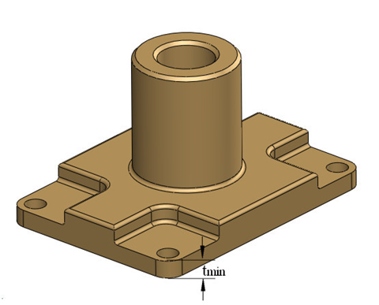

部品において、最小肉厚はユーザーが指定した範囲内である必要があります。
インベストメント鋳造プロセスでは、精密に再現された部品を経済的に製造することができます。インベストメント鋳造において、肉厚は欠陥のない部品を実現するための重要な要素です。達成可能な最小肉厚は、材料の種類および溶融金属が流動する距離に依存します。
製品設計に応じて、材料の種類ごとに異なる最小肉厚が必要となるため、ユーザーは適切な値を設定できる必要があります。
製品設計に対する推奨値は、選択された材料に基づいてルール構成から選択する必要があります。
製品の製造条件および使用条件に応じて、部品の最小肉厚に対する適切な値を選択または設定してください。
ユーザーは、材料肉厚の表において、ドロップダウンリストから材料を選択できます。このリストは、Materials Database に登録されているインベストメント鋳造用材料を使用して生成されます。
DFMPro の実行時には、Input Selection ダイアログボックスで部品の材料を選択する必要があります。ユーザーは、設定された「Material Group」の下にある任意の「Material Grade」を選択できます。
